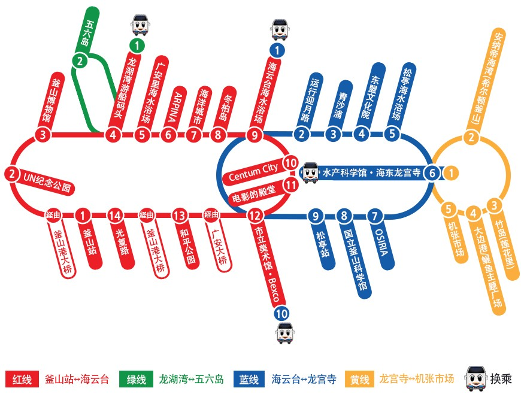

交通資訊
✈從金海機場出發
金海機場巴士
▶可以直達釜山知名飯店門口
▶往西面、釜山火車站、南浦洞方向：6000韓元，07:00~21:50 (40分鐘一班)
▶往海雲台方向：7000韓元，06:50~22:00 (25分鐘一班)
輕軌火車
▶輕軌火車於2011年開通，不怕塞車也很便宜，與都市地鐵不一樣，但也是個相當方便釜山交通！
▶搭乘輕軌火車的時候，請直接在機器上購買單程票就好，如果有交通卡或是首爾使用的T money卡也可以使用。
計程車/包車
▶從機場到西面市中心約一萬五韓元。建議團體旅遊或多人出遊，可以直接搭成計程車到各個釜山景點，費用平均下來也不貴喔！
市區公車
▶從機場到市區最便宜的釜山交通選項，使用現金為1300韓元，使用交通卡為1160韓元
✈釜山地鐵
1號線(橘)：新平—老圃 2號線(綠)：萇山—梁山 3號線(棕)：水營—大渚 4號線(藍)：美南—安平 輕軌(紫)：沙上—加耶大學
釜山地鐵一日票
▶釜山地鐵只分為一段票及兩段票兩種，使用交通卡分別是1,300韓元及1,500韓元兩種。
▶另外，一日票適合一天需多次進出地鐵站的朋友，一次交通卡要花上1300韓元，但是一日票一張5000韓元就可以不限次數的進出，所以一日當天要進出地鐵站四次以上的話，買一日票就相當划算唷！
釜山地鐵票券購買方法
1.在機器上可以選擇要使用的語言，有中英日韓四種語言可以選擇，並點選左側的橘色單次交通卡
2.查詢目的地鐵站
3.選擇購買數量
4.選擇一張一般票，基本車資加上保證金的價格會一併顯示於畫面上
5.投入應付金額便能取得交通卡
6.用單次交通卡輕觸閘口感應區，發出嗶聲即可通過
貼心提醒：僅能使用韓國紙鈔 1,000/ 5,000/ 10,000韓元與銅板 50/ 100/ 500韓元
✈輕軌電車
機場3號出口出來後，過馬路再右轉就可以抵達輕軌電車的月台，換零錢的機器只能投1,000元的韓幣，購票機器的操作介面容易，但因為輕軌票、一日券和地鐵票長得都一樣，要注意不要走錯月台唷！
貼心提醒：輕軌電車路線跟地鐵銜接，可以參考上面的地鐵路線圖唷！
✈機場巴士（利木津巴士）
從機場前往市區（南浦洞、西面）或海雲台最方便的兩種方式就是機場巴士及地鐵，雖然巴士比地鐵貴，但是可以直達，對於攜帶大型行李的旅客來說是非常便利的選擇！出關之後一直往右前方走，從3號出口出站，往右就可以看到公車站牌，車資上車付給司機即可。
路線
西面/釜山火車站 ✔金海國際機場 → 西面樂天飯店 → 現代百貨公司→ 地鐵釜山鎮站 → 釜山火車站 →東橫INN酒店 → 中央洞→釜山客運碼頭→ 南浦洞 → 忠武洞
海雲台✔金海國際機場 → 南川洞 →光安洞 → Centum大酒店→ BEXCO→威斯汀朝大酒店→ 皇家天堂大酒店→ -尾浦→長山地铁站→海雲台白醫院→養雲小学
票價
1.西面/釜山火車站路線：6,000韓元
2.海雲台路線：7,000韓元

✈釜山觀光巴士
在釜山，雖然搭乘公車、地鐵等大眾交通工具在各景點間移動非常方便，但是如果搭乘「釜山觀光巴士」可以更輕鬆地玩盡各知名旅遊景點，而且憑1日使用券可自由上下車的紅線、藍線、綠線市區觀光循環路線，以及大型觀光巴士，是個非常方便的釜山交通方式！
票價
1.成人15,000韓元
2.兒童與青少年8,000韓元
✈韓國KTX高速列車
計畫一次把釜山和首爾玩一玩，這當中最適合的交通工具就莫屬韓國KTX高速列車了，它就像台灣的高鐵，從釜山到首爾僅需2.5小時，當天來回更是沒問題，現在更推出了KTX周遊券Korail Pass，讓你在指定日期無限次搭乘，非常划算！
Korail Pass
KORAIL Pass(Korea Rail Pass)是外國遊客能夠於韓國旅遊時使用的韓國火車通行證，遊客可以根據旅行天數選擇不同的使用天數(2、3、4、5日)，在規定的天數內不限次數、自由搭乘KTX等一般列車以及5種特定觀光列車。
票種：連續型Pass(3/5日) / 選擇型Pass(2/4日)